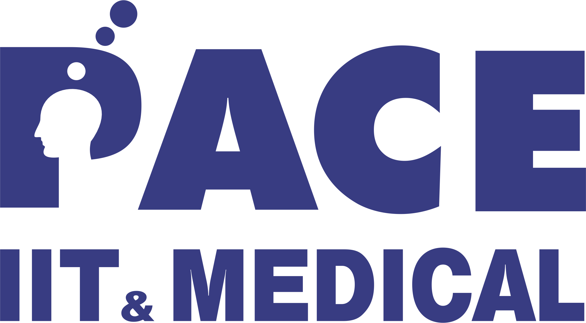
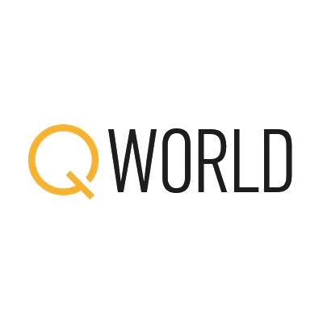

About
I'm a Master of Technology candidate in Quantum Technologies at IIT Jodhpur (CGPA 9.25, rank holder), working across quantum error correction, quantum random number generation, and hardware-aware compilation for early fault-tolerant systems. My research sits at the intersection of quantum information theory and applied machine learning — building calibrated, latency-constrained systems that hold up under real device noise, not just simulation.
I completed my Summer Research Internship at QNu Labs, building ML pipelines to attribute and benchmark randomness sources (PRNG/TRNG/QRNG), and a Mentor with QWorld's QIntern 2026 program on quantum federated unlearning. I previously mentored quantum-error-correction teams for the Pan-African Quantum Challenge, and hold 11 granted Indian IP registrations spanning post-quantum cryptography, QKD, quantum hyperspectral imaging, and federated learning. I'm a selected IBM Qiskit Advocate and served as a Mentor in the IBM Quantum Global Summer School 2026.
Education
M.Tech, Quantum Technologies · Indian Institute of Technology, Jodhpur
- CGPA 9.25 — Rank Holder
B.Tech, Computer Science & Engineering · MIT Art, Design and Technology University
- CGPA 8.92 — Rank Holder

Higher Secondary (Science) · Pace Junior Science College, Maharashtra
- 81.69%
Secondary School · St. Francis High School, Maharashtra
- 94% — Rank Holder
Experience

Mentor · QWorld, QIntern 2026
- Mentoring project qi26_22, "Dynamic Entanglement-Weighted Pruning for QFL-Based Supply Chain Risk Unlearning," combining Quantum Federated Learning with machine unlearning.
- Guiding use of Quantum Fisher Information for parameter sensitivity and entanglement-weighted gate pruning to balance privacy, accuracy, and efficiency.
Quantum Engineer, Summer Intern · QNu Labs
- Built a hierarchical ML framework for randomness-source attribution, classifying PRNG vs. TRNG/QRNG binary streams across a 4.15 GB multi-source dataset validated with NIST SP 800-22/90B, Dieharder, and ENT.
- Engineered a 64-dimensional statistical feature space (entropy, spectral, compression, autocorrelation, distributional) and an isotonic-calibrated CatBoost/XGBoost/LightGBM ensemble reaching 81.21% mean attribution confidence.
- Designed the Randomness Quality Index (RQI), a composite benchmarking metric scored across 37 random number generators, with leading QRNGs reaching up to 97.48.
- Applied SHAP-based explainability, identifying bz2 compression ratio and byte-transition entropy as the strongest signals separating physical from algorithmic randomness.
Mentor, Quantum Error Correction & Mitigation · Africa Quantum Consortium
- Mentored 5 interns in the Pan-African Quantum Challenge on automated QEC code construction, CUDA-Q simulation, and ML decoders for topological, stabilizer, and QLDPC codes.
- Co-developed a two-tier framework routing 3.3–6.2% of surface-code (d ∈ {3,5,7,11}) syndromes to PyMatching MWPM, reaching 99.81% decoding accuracy under fault-tolerant circuit-level noise.
Network Security Associate Intern · Fortinet
- Applied Fortinet Certified Associate/Fundamentals cybersecurity training to analyze traffic, detect threats, and enforce multi-layer security policy across enterprise Fortinet appliances.
- Investigated and responded to security incidents using Fortinet's detection and response methodology, cutting mitigation time by 35%.
Cloud Associate Intern · Amazon Web Services (AWS)
- Designed secure, scalable AWS infrastructure (EC2, S3, VPC) achieving 99.99% high availability with strict multi-layer network isolation.
- Built automated CI/CD pipelines via CodePipeline, CloudFormation, and Lambda, cutting deployment time by 40%.
Software Engineer Intern · Microsoft, Future Ready Talent
- Built and deployed responsive web apps on Azure Static Web Apps and App Services, integrating Bot & Cognitive Services for 99.9% availability.
- Designed Azure Storage architectures and automated CI/CD with Azure Monitor and Application Insights, reducing downtime by 25%.
Data Analytics & AI Intern · IBM
- Built predictive models and interactive dashboards (IBM Cognos, Tableau) for data-driven decision-making.
- Trained ML models with IBM Watson for predictive analytics and NLP, and integrated them into business workflows via APIs. Named Best Intern of the Month at CodeClause during the same period for a parallel Python development internship.
Publications & Preprints
QR-SPPS: Quantum-Native Retail Shock Propagation and Policy Stress Simulator
40-qubit Ising Hamiltonian, VQE cascade-failure detection, ADAPT-VQE policy ranking, DOS-QPE tail-riskLatency-Constrained Hardware-Aware Quantum Error Correction Co-Design with Adaptive Confidence-Gated Neural Decoding for the Rotated Surface Code
99.81% logical accuracy routing just 3.3–6.2% of syndromes to MWPM refinementHardware-Aware Low-Latency Quantum Compilation with Data-Driven Lightweight Error Detection for Early Fault-Tolerant Systems
Up to 68% improvement in algorithmic success probability vs. SABRE baseline · Springer proceedingsQR-SPPS: Quantum-Native Retail Supply Chain Risk Simulation via VQE, ADAPT-VQE Counterfactual Policy Ranking, and DOS-QPE Boltzmann Tail Risk Quantification
First ADAPT-VQE application to counterfactual policy ranking (287× speedup)Evaluation Framework for Centralized and Decentralized Aggregation Algorithm in Federated Systems
DOI: 10.7759/s44389-026-00028-0FEDRETAIL: A Framework for Distributed Retail Data Analysis and Learning Toward E-commerce 5.0
MIT ADT University, Dept. of Computer Science and EngineeringProjects
Selected from 25 public repositories on GitHub
QR-SPPS — Quantum Supply Chain Risk Simulator
40-qubit Ising Hamiltonian on A64FX supercomputers via QARP/MPI for zero-error VQE convergence; ADAPT-VQE and DOS-QPE for real-time supply-chain interventions. Fujitsu Quantum Challenge 2026.
Hardware-Aware Quantum Compilation Pipeline
Joint optimization of qubit mapping, SWAP insertion, and syndrome placement for early fault-tolerant systems — up to 68% improvement in algorithmic success probability vs. SABRE.
Adaptive QEC Decoder
Confidence-gated neural + MWPM decoding framework for latency-constrained rotated surface-code error correction, reaching 99.81% logical accuracy.
Analytical BB84 QKD Engine
Dual-backend Qiskit & Streamlit QKD simulator with vectorized probability models, multi-strategy eavesdropping-detection dashboards, and automated privacy amplification under an 11% QBER abort threshold. Qiskit Fall Fest Winner.
Quantum-Resistant Module Lattice Cryptography
Crypto-agile Rust wallets (PQ-BANK) integrating Kyber-1024 KEM, Dilithium5 signatures, and XChaCha20-Poly1305 symmetric envelopes for tamper-proof, quantum-safe transaction verification.
Quantum Hyperspectral Imaging (Q-HSI)
Hybrid CNN-VQC ensemble in PennyLane for benign/malignant skin-lesion classification, achieving 83.5% diagnostic accuracy at 13× faster quantum training throughput.
Quantum Phase Space Simulator
Interactive dashboard for CV quantum information — Wigner functions, density matrices, Husimi Q, GBS, and CV-QML across 8 quantum states using QuTiP, Strawberry Fields, and PennyLane, validated on IIT Jodhpur HPC.
Quantum Secret Sharing Simulator
Interactive simulation of the GHZ-state Quantum Secret Sharing protocol built with Streamlit, QuTiP, Qiskit, and Plotly — deployed live.
Dynamic Entanglement-Weighted Pruning for QFL Unlearning
Quantum Federated Learning combined with machine unlearning for supply-chain risk models — Quantum Fisher Information-guided, entanglement-weighted gate pruning to balance privacy, accuracy, and efficiency. QWorld QIntern 2026.
Hybrid Quantum-Classical QAOA Framework
GPU-accelerated Qiskit Aer framework benchmarking 12 classical SciPy optimizers for MAX-CUT QAOA, executing deep parameter sweeps across HPC nodes to systematically mitigate local minima.
Error Correction in B92 QKD Protocol
Implementation and analysis of the B92 Quantum Key Distribution protocol in Qiskit, followed by classical post-processing for error correction and privacy amplification.
Decentralized Federated Learning
Blockchain-consensus DFL framework with secure aggregation, P2P communication, and post-quantum identity verification for scalable, privacy-first distributed learning.
IP & Patents
Government of India — filed & granted copyrights and patents
System and Method for Quantum Phase Space Simulation of Quantum States
Quantum Resistant Module Lattice Cryptography System
Quantum Native Retail Shock Propagation and Policy Stress Simulator
Analytical BB84 Quantum Key Distribution (QKD) Engine
Quantum Hyperspectral Imaging (Q-HSI) System
Evaluation Framework for Centralized and Decentralized Aggregation Algorithms in Federated Systems
HyperML: Accelerating AI with Advanced Automation Framework
GNN: Graphical Neural Network System
DFL: Decentralized Federated Learning System
FEDRETAIL: Federated Retail Data Analysis and Learning Framework
Skills & Recognition
Programming
Quantum Frameworks
Machine Learning
Cloud & DevOps
Licenses & Certifications
- Foundations of Quantum Error Correction — IBM, Jun 2026
- Integrating Quantum and High-Performance Computing — IBM, Jun 2026
- General Formulation of Quantum Information — IBM, Jun 2026
- Quantum Diagonalization Algorithms — IBM, Jun 2026
- Quantum Chemistry, with Variational Quantum Eigensolver — IBM, Jun 2026
- Quantum Machine Learning — IBM, Jun 2026
- Practical Introduction to Quantum-Safe Cryptography — IBM, Jun 2026
- Variational Algorithm Design — IBM, Jun 2026
- Quantum Business Foundations — IBM, Jun 2026
- Basics of Quantum Information — IBM, Mar 2026
- QSilver — Diploma in Quantum Computing & Programming, QWorld
- QBronze — Diploma in Quantum Computing & Programming, QWorld
- AWS Academy Cloud Architecting & Cloud Foundations — AWS
- Fortinet Certified Associate & Fundamentals — Cybersecurity, FortiGate 7.4 Operator
Honors, Awards & Hackathons
- 1st Place — IBM Qiskit Fall Fest, IIT Jodhpur Hackathon, Nov 2025
- Top 50 (Rank 46 Worldwide) — MIT iQuHack 2026, BlueQubit × MIT
- Top 40 (Rank 38 Worldwide) — Yale Peaked Hackathon 2026, BlueQubit × Yale
- Rank Holder in Academics — MIT ADT University, Pune, Sep 2024
- Best Intern of the Month — CodeClause, May 2023
- 1st Place, National Project Work Contest — Knowledge Olympiad Society Hyderabad, 2016
Leadership & Volunteering
- Qiskit Advocate — IBM Quantum, since Apr 2026
- Mentor — QWorld QIntern 2026
- Student Member, Quantum Information & Computation Group, IIT Jodhpur
- Campus Ambassador — Talent Battle, 2023
- Student Volunteer — HelpAge India & Indian Red Cross Society
Languages
- Bengali & Hindi — Native/Bilingual
- English — Professional Working Proficiency
- French — Elementary
- Marathi — Elementary
Get in Touch
Open to research collaborations, quantum hardware/QEC roles, and interesting problems in fault-tolerant computing.
Let's Build the Quantum Future — Say Hello